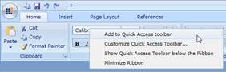

Ribbon Control is now shipped with built-in Context Menu. It provides several options, through which the user can customize the QAT, minimize the ribbon or add an item to QAT.

Figure 647: Ribbon Context Menu
|
|
|
Using Ribbon Context menu end user can easily pick the frequently used Items from Ribbon and add to QAT. |
 Note:
Note: